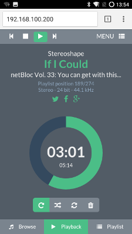

Screenshot vom Google Chrome™ Browser mit geöffnetem Volumio Webinterface. Lizenz CC Jörg Neikes 30.07.2016
MPD Clients mit Volumio
Ja, es gibt viele Clients um MPD Server remote zu verwalten. Hier eine Auflistung meiner getesteten Clients mit der Installation als GIF.